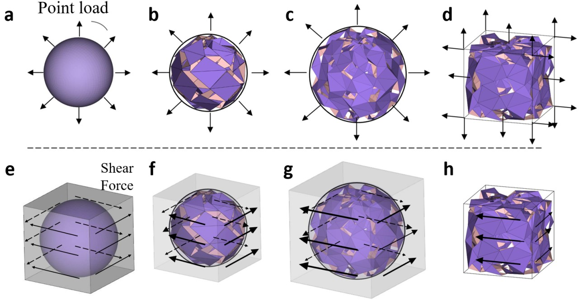

肖锴 Kai Xiao
高级前瞻研究工程师，比亚迪汽车工程研究院
上海交通大学机械工程博士 · 1997 年生 · 在职
我在比亚迪担任高级前瞻研究工程师，是车身部门 AI 业务负责人之一。博士研究围绕可重构结构的逆向设计与非线性仿真，开展数值模型二次开发及实验校核。个人项目中，自建多场景视觉仿真与评测平台，并完成手机视觉跟踪与云台系统集成。
数值模型与代码扩展 · 仿真环境与基准评测 · 系统集成与性能优化
代表项目
自建多场景仿真演示 / 6 秒 · 放大播放个人项目 · 环境与模块集成 · 基准评测
自建多场景视觉跟踪仿真平台
将实地难以重复的遮挡、多车干扰和检测失误转化为可控实验，在相同条件下比较跟踪方案的稳定性与失锁恢复能力；同时生成带标注数据，开展检测模型训练及独立场景评测。
基于 SceneKit 自行搭建三维场景、赛车运动、相机及二轴云台模拟，接入检测网络与自动评分；对照测试覆盖 10 条赛道、6 种场景配置、8 个机位及 5-8 台车。
在仿真画面中直接运行训练后的 YOLO11n，以检测输出为基准校准可控误差模型，复现连续漏检、误检及检测框抖动。固定场景、随机种子和评分规则，比较两种检测输入对跟踪、失锁与重捕的影响。
10 组、每组 60 秒的校准对照中，误差模型与实际运行 YOLO 的平均对象召回率相差 1.32 个百分点，含误检帧比例相差 0.46 个百分点。
对标结果：可控误差模型与实际运行 YOLO
两者使用同一组仿真场景；“实际运行 YOLO”指在渲染图像上执行训练后的 YOLO11n 神经网络，“误差模型”指按场景、机位和时间连续性生成检测误差的模拟器。测试使用 10 组固定随机种子，每组 3,600 帧、60 秒。
| 10 组测试均值 | YOLO11n | 误差模型 |
|---|
| 对象召回率 | 78.59% | 79.91% |
|---|
| 含误检帧比例 | 66.76% | 66.30% |
|---|
| 跟踪锁定率 | 66.34% | 63.83% |
|---|
这里衡量模拟检测误差与 YOLO 输出的接近程度。测试包含高误检场景；场景级结果仍有偏差，总体均值接近不代表逐帧一致。这些场景用于校准，不作为未见场景泛化或真实视频性能的结论。
将评分真值与算法输入分离，并注入通信延迟、抖动与丢包，检查算法在不同条件下的退化，以及二轴云台追赶、回摆与稳定性。
训练与泛化：仿真数据训练 YOLO 的独立实验
构建 9,000 张带自动标注的仿真训练数据池及 1,500 张验证图；测试集的赛道、场景和机位与训练、验证集均隔离，开展 YOLO 模型规模与训练数据量的对比实验。
| 模型 / 仿真训练图数 | 召回率 | mAP50–95 |
|---|
| YOLO11m / 7,000 张 | 95.20% | 77.58% |
|---|
| YOLO11l / 9,000 张 | 95.32% | 78.47% |
|---|
上述结果来自同协议的 4,200 张隔离场景仿真测试图，含 600 张无车负样本；输入尺寸 640，召回率采用置信度阈值 0.25、匹配 IoU 0.5。它检验模型在模拟器内跨环境的泛化，与前述检测误差校准是两组独立实验。

研究中的受力方式与约束设置 · Fig. S8
Materials Horizons, 2026博士研究 · 数值模型与代码扩展 · 第一作者论文
可重构三维结构的逆向设计与非线性仿真
围绕可重构结构的几何可达性与力学稳定性，研究如何从目标形状反推连接设计，以及结构在大变形后能否保持稳定；通过数值计算与实物实验，为结构设计提供可验证的依据。
逆向设计：开发参数化 MATLAB 程序，将目标三维形状映射为单元结构；用运动学约束分析结构能如何运动，并以遗传算法搜索单元连接关系。成果发表于 Nature Communications。
形变与稳定性：将结构离散为杆件与转动弹簧，结合材料本构、单元刚度与边界条件开展非线性仿真；通过数值代码二次开发和实物加载对照，研究大变形、双稳态与形状锁定。成果发表于 Materials Horizons。
数值方法：结构离散、材料本构与结果校核
非线性有限元建模与二次开发：基于 MATLAB 杆件—铰链有限元程序（MERLIN2），将结构离散为杆件与转动弹簧，结合 Ogden 超弹性本构及弯曲／折叠刚度；设置位移控制与支撑约束，排除刚体运动并保留目标变形自由度。
数值原理与验证：依据弹性能对位移的二阶导数计算等效体积模量，由剪切应力—应变关系计算等效剪切模量；对照仿真与实物加载的力—位移曲线，校核大变形、双稳态与形状锁定行为。
几何与碰撞约束：参与参数化 MATLAB 建模及 STL 网格处理，结合 SAT 三角面非碰撞约束与近邻筛选，检查结构变形中的几何干涉。
个人项目 · 系统集成与性能优化 · iOS / Android
手机端视觉跟踪与云台控制
面向玩家独自驾驶遥控车时难以兼顾拍摄的需求，让手机与云台自动完成跟拍。在高速小目标、遮挡和相似车辆干扰下，设计目标保持与失锁重捕流程；兼顾手机算力、录像和控制延迟，完成 iOS / Android 应用部署。
负责模型选型、数据与实验设计及实机验收，使用 AI Agent 辅助实现。开展 LoRAT 视觉 LoRA 适配与 YOLO 微调，集成 FEAR 跟踪；通过结果时序对齐、过期任务取消和缓冲复用，减少推理排队与图像拷贝。
骁龙 870 手机的静态短测中，跟踪模型每秒处理约 26 帧，同时录制每秒 60 帧的 1080p 视频。
技术细节：模型适配、部署与实测
实践 LoRAT（Transformer）视觉 LoRA 适配、YOLO 检测微调与 FEAR 跟踪；使用 Core ML 和 ncnn 在手机上运行模型。对齐检测与跟踪结果的时间戳，取消过期任务，复用模型与帧缓冲。
| 预处理 | 融合灰度化与降采样，减少中间缓冲。骁龙 870 的 1080p→640×360 单项耗时中位数从 3.95 ms 降至 1.01 ms，输出像素一致。 |
|---|
| iOS | iPhone 12；20 分钟静态目标测试；每秒 15 次调度设置下平均更新 14.77 次/秒，采集至结果延迟 P95 为 122 ms。 |
|---|
| Android | FEAR / ncnn CPU，骁龙 870，静态短测；模型处理 25.9–26.7 帧/秒，录像帧率为 60 fps。 |
|---|
视频为现有横屏成片的网页压缩版；开场外拍与 App 画面为不同次拍摄，部分片段经后期稳像。性能数据来自独立测试日志，静态测量不代表所有动态场景。
视频配乐：Feel the Pulse — Punch Deck · CC BY 4.0；原片音乐与混音保留。
个人项目中，我负责问题定义、技术方案、实验设计与实机验收，使用 AI Agent 辅助训练、代码实现和工程集成。
第一作者论文
2022第一作者 · Nature Communications 13, 7474
通过几何映射、运动学约束与连接拓扑搜索，实现目标三维形状的可重构结构逆向设计；开发参数化程序，并以打印样件与三维扫描检验模型。
第一作者 · Materials Horizons 13, 5430–5444
研究连接拓扑、结构参数与大变形、双稳态及形状锁定之间的关系，结合非线性仿真和加载实验验证力学响应。
工作与教育
2024—至今比亚迪汽车工程研究院
高级前瞻研究工程师 · 车身部门 AI 业务负责人之一
气弹簧布置优化。解决前舱盖气弹簧装在哪里、需要多大支撑力的问题。将舱盖形状、重量和重心输入计算程序，用粒子群优化算法搜索方案，检查开合用力、平衡位置和可用行程，并以三维模型查看布置结果。
智能车门。负责电动车门限位器研发和视觉避障方案，探索用相机识别障碍、估计距离，以替代雷达降低硬件成本。结合三维设计、力学仿真与工程试验评估方案；机械零部件已量产，视觉算法尚未量产。
技术细节：视觉方案与仿真工具
视觉方案采用 YOLO 与 Depth Anything；工程研发使用 CAD 三维建模、MATLAB 非线性求解及 CAE 静力学／动力学仿真。
2018—2023上海交通大学
机械工程博士 · 导师 Jaehyung Ju
院长提名奖（2023）；研究生优秀奖学金（2022）